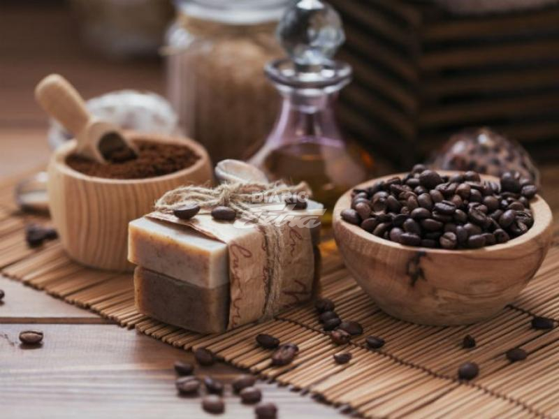

Jabón de café

Precio: $4.99
El resultado después de la aplicación es una piel luminosa, sin impurezas y de aspecto hidratado y sana. Esto es debido a que los efectos estimulantes de la cafeína ayudan a eliminar toxinas y grasas, consiguiendo así una piel más tersa.
Ingredientes:
- Glicerina
- Café
- Esencia de vainilla
- Vaselina